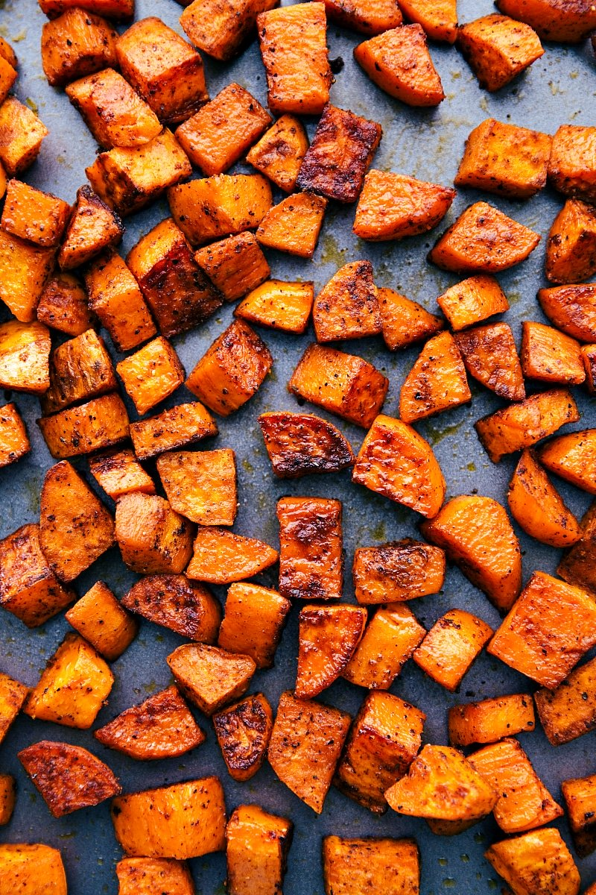

Roasted Sweet Potatoes

Sweet potatoes are roasted to perfection with chunky onion wedges and garlic, then finished with a drizzle of balsamic vinegar for a naturally sweet holiday side dish. My Granny made this for Easter dinner. We were all sitting at the table commenting on how delicious it was and asked for the recipe.
Ingredients
- Sweet Potatoes
- Onions
- Garlic
- Olive Oil
- Balsamic Vinegar
- Salt and Pepper
Steps
- Preheat the oven to 425 degrees F (220 degrees C).
- Mix sweet potatoes, onion, and garlic in a bowl. Drizzle olive oil over the mixture and toss to coat; pour into a shallow roasting pan.
- Roast sweet potato mixture in the preheated oven, turning frequently, until the vegetables are soft and golden brown, 30 to 35 minutes.
- Remove from the oven. Drizzle balsamic vinegar over the vegetables; season with salt and pepper.